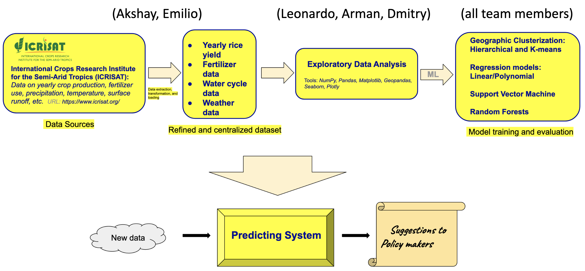
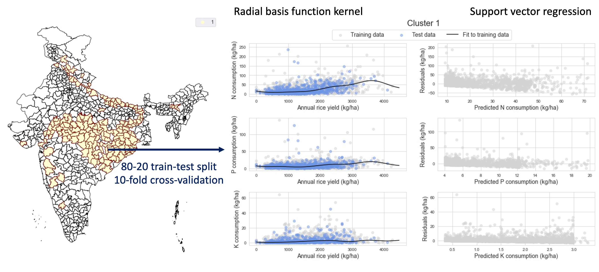
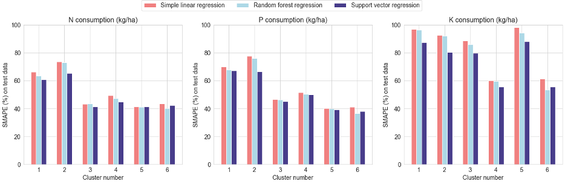

Predicting Fertilizer Input for Rice Cultivation in India
- Project team members: Akshay Suresh (lead), Arman Darbinyan, Dmitry Shcherbakov, Emilio Codecido & Leonardo Santana
- Mentor: James Bramante
- Github repo: may22-barrel
- 5-minutes video presentation: YouTube link
- Presentation slides: PDF
- Executive summary: PDF
- Programming language: Python (numpy, pandas, scikit-learn, geopandas, matplotlib seaborn)
- Supervised machine learning (ML) techniques: Linear regression, random forest, support vector machine
- Unsupervised ML algorithms: \(k\)-means clustering, hierarchical clustering
Project Context
This project was completed as part of the Erdös Institute Data Science Bootcamp, Spring 2022. Within a hard 2-week deadline, team members were required to define their project goal, identify target stakeholders, gather data, and execute data analyses. The following deliverables were due at the end of the 2-week project window.
- 1-page executive summary
- 5-minutes video presentation
- Presentation slides
- Annotated Github repository
Links to our submitted deliverables are provided in a note near the top of this page.
Project Workflow

Project workflow diagram
Objective: Predict mean NPK (nitrogen, phosophorous and potash) fertilizer inputs to achieve specific rice yields in different cultivation environments across India.
Target stakeholders: Agriculture policy makers in India
Data sources:
- District-level database (1990–2016) maintained by the International Crops Research Institute for the Semi-Arid Tropics (ICRISAT):
- Rice cultivation data: cropped area, yield, irrigated area
- Seasonality and temperature
- Water cycle data: precipitation, surface runoff, and evapotranspiration
- Wind speed
- Historical NPK fertilizer usage
- Shapefile of Indian districts from Kaggle
Modeling and Results
Rice is a hardy crop capable of thriving in a variety of soils, including loams, silts, and gravel. Collating up to 26 years of district-level rice cultivation (cropped area, yield, irrigated area) and environment data (temperature, precipitation, wind speed, evapotranspiration), our analysis involved three steps.
- Firstly, we grouped districts with similar ecological parameters into clusters. To do so, we experimented with two unsupervised learning approaches, namely, \(k\)-means and hierarchical clustering. Both methods favored the grouping of Indian districts into 6 rice cultivation clusters.

Optimal clustering of Indian districts based on application of hierarchical clustering to our environmental data (temperature, precipitation, wind speed, evapotranspiration). Note that the above map bears some visual resemblance to the Koppen-Geiger climate classification map of India. However, we caution readers against performing meticulous comparisons between these maps as our algorithms additionally incorporate soil-dependent features such as surface runoff and evapotranspiration.
{kind=link}
- Over independent clusters, we regressed the historical NPK consumption data against rice yield. Here, we trialed simple linear regression, random forest regression, and support vector regression. 
Results from application of support vector regression to cluster 1 data. Our fit residuals to the potash data (bottom row) look reasonably flat and structure-free. However, the same cannot be said for our nitrogen (top row) and phosphorous (middle row) fit residuals, possibly hinting at either some confounding variable or some parameter cross-correlations unaccounted for in our analyses.
- The symmetric mean absolute percent error (SMAPE) offers a convenient difference-based relative measure for comparing model performances across clusters with unequal numbers of data points.
\[ {\rm SMAPE} = \left( \frac{100\%}{N_{\rm observations}} \right) \sum_{\rm observations} \left(\frac{|{\rm True \ value} - {\rm Predicted \ value}|}{(|{\rm True \ value}| + |{\rm Predicted \ value}|)/2} \right) \]
For a perfect model (true value = predicted value), \({\rm SMAPE} = 0\%\). Meanwhile, a null prediction (predicted value = 0) entails \({\rm SMAPE} = 200\%\).

Studying the above SMAPE barplots, we note that support vector regression marginally outperforms other regression models. However, in general, our regression models are not too accurate, yielding median SMAPE values of about 50% for N and P, and nearly 75% for K.
Areas for Improvement
- Consider incorporating data on soil nutrient content, soil type and texture, and solar irradiance to improve the accuracy of model fits.
- Assess the impact of crop rotation and off-season farming practices on the sustainability of a desired crop yield.